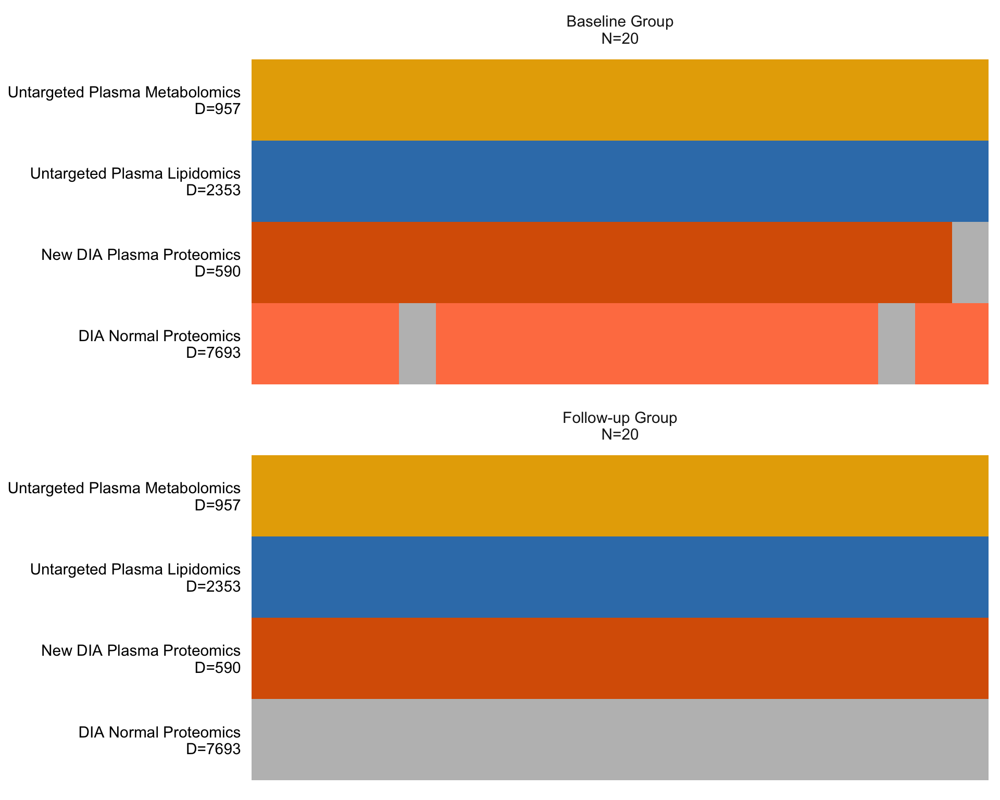
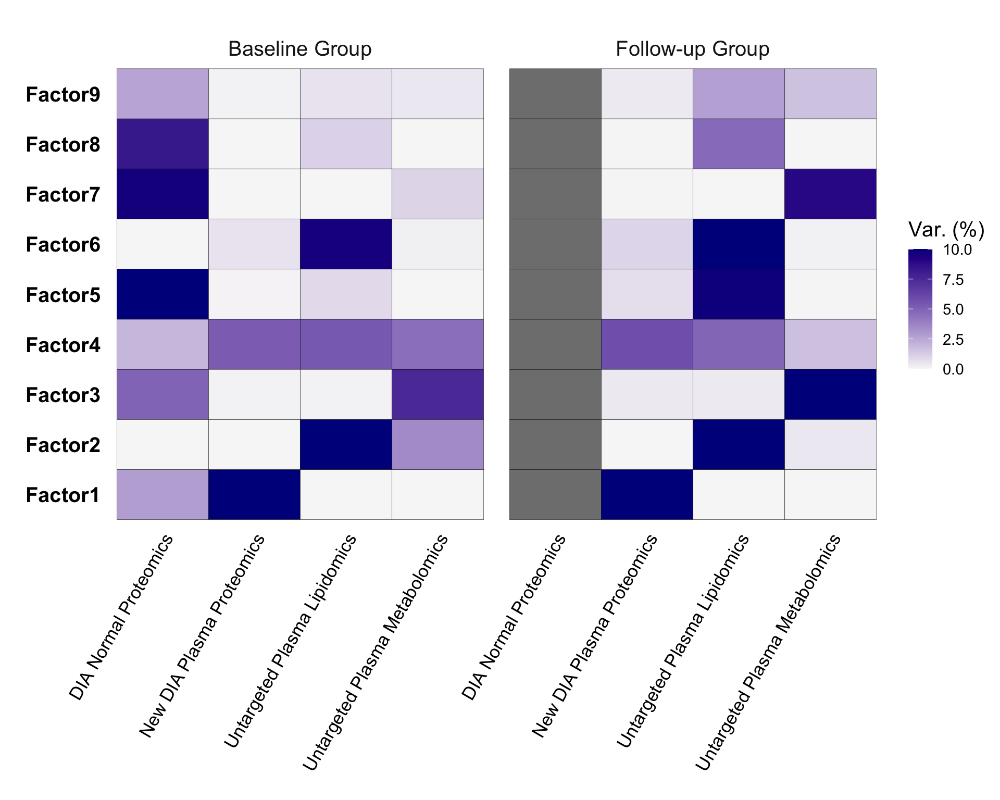
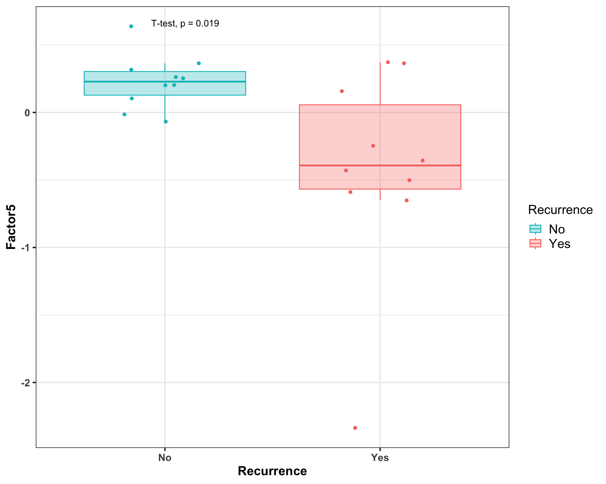
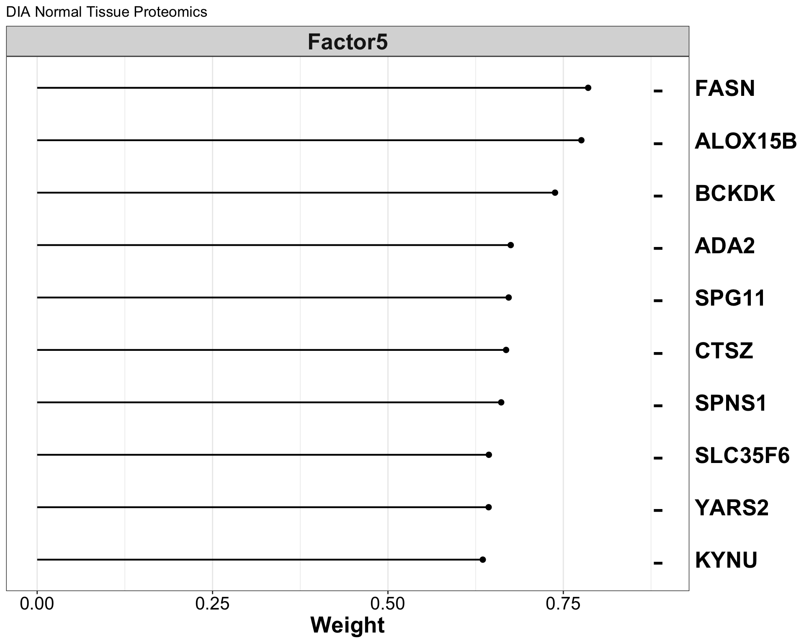
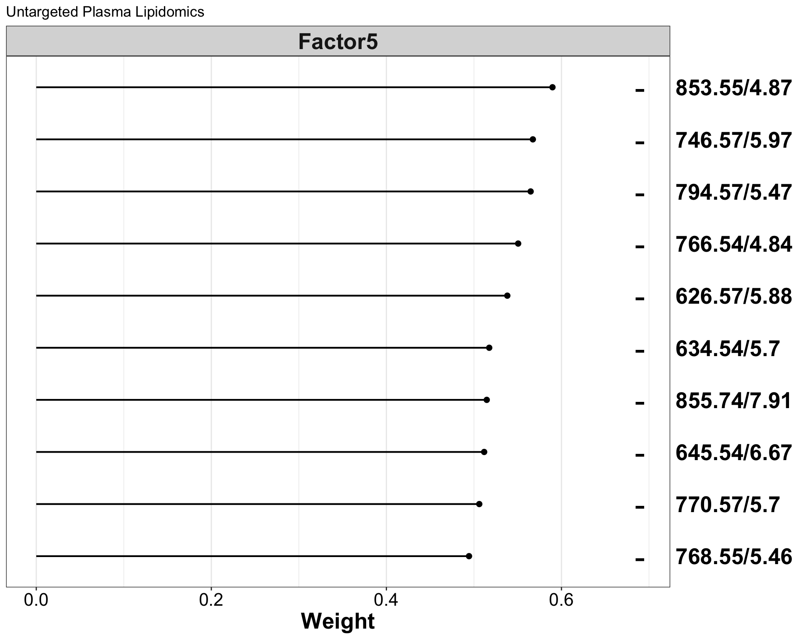
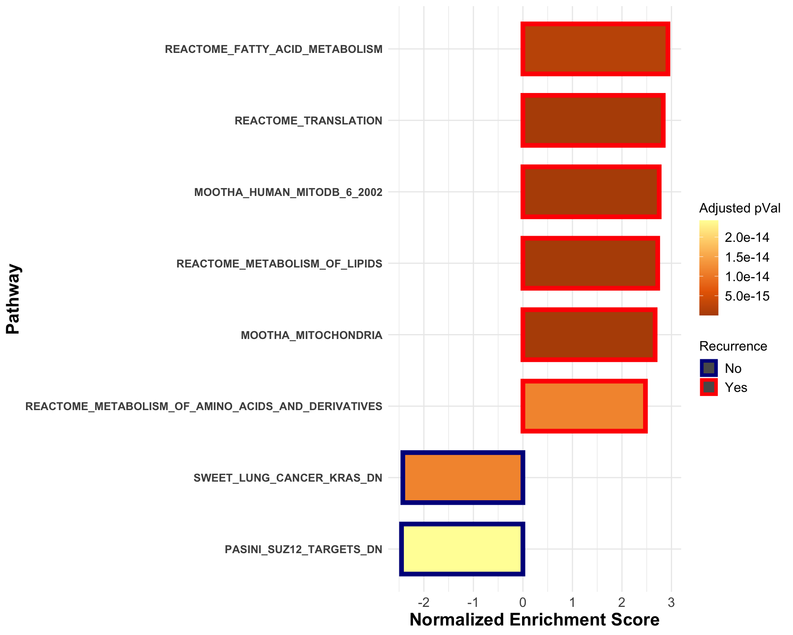
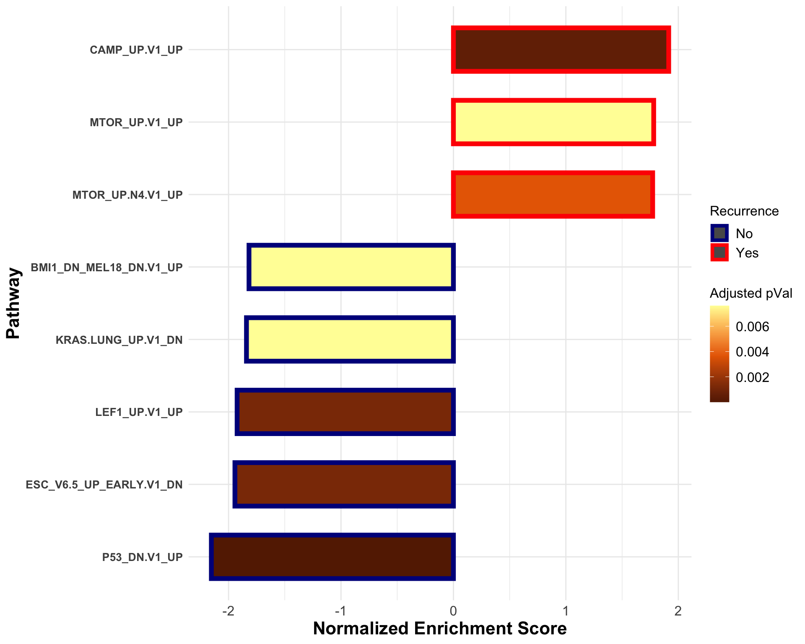
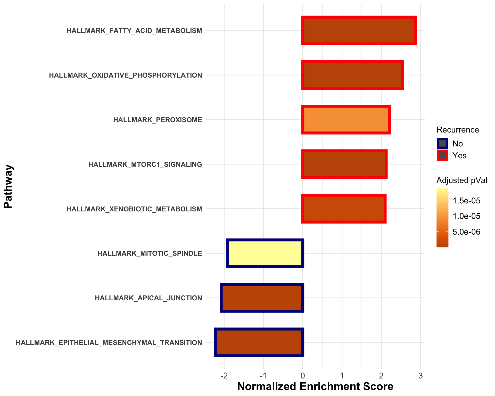

Last updated: 2023-09-14
Checks: 6 1
Knit directory:
SMART-CARE_LungCancer_MethodDev/
This reproducible R Markdown analysis was created with workflowr (version 1.7.0). The Checks tab describes the reproducibility checks that were applied when the results were created. The Past versions tab lists the development history.
Great! Since the R Markdown file has been committed to the Git repository, you know the exact version of the code that produced these results.
Great job! The global environment was empty. Objects defined in the global environment can affect the analysis in your R Markdown file in unknown ways. For reproduciblity it’s best to always run the code in an empty environment.
The command set.seed(20230425) was run prior to running
the code in the R Markdown file. Setting a seed ensures that any results
that rely on randomness, e.g. subsampling or permutations, are
reproducible.
Great job! Recording the operating system, R version, and package versions is critical for reproducibility.
Nice! There were no cached chunks for this analysis, so you can be confident that you successfully produced the results during this run.
Using absolute paths to the files within your workflowr project makes it difficult for you and others to run your code on a different machine. Change the absolute path(s) below to the suggested relative path(s) to make your code more reproducible.
| absolute | relative |
|---|---|
| /Users/qianwu/Desktop/SMART-CARE_LungCancer_MethodDev | . |
Great! You are using Git for version control. Tracking code development and connecting the code version to the results is critical for reproducibility.
The results in this page were generated with repository version 16c8851. See the Past versions tab to see a history of the changes made to the R Markdown and HTML files.
Note that you need to be careful to ensure that all relevant files for
the analysis have been committed to Git prior to generating the results
(you can use wflow_publish or
wflow_git_commit). workflowr only checks the R Markdown
file, but you know if there are other scripts or data files that it
depends on. Below is the status of the Git repository when the results
were generated:
Ignored files:
Ignored: .DS_Store
Ignored: .RData
Ignored: .Rhistory
Ignored: analysis/.DS_Store
Ignored: code/.DS_Store
Ignored: data/.DS_Store
Ignored: output/.DS_Store
Untracked files:
Untracked: analysis/feature_selection.Rmd
Untracked: code/Junyan/
Untracked: code/about.Rmd
Untracked: code/dataset_list.R
Untracked: code/feature_selection_old.Rmd
Untracked: code/license.Rmd
Untracked: code/mofa_downstream_analysis.Rmd
Untracked: code/mofa_factors_investigation.Rmd
Untracked: code/mofa_varied_omics_combinations.Rmd
Untracked: code/workflowr_commands.R
Untracked: data/AG_Hell/
Untracked: data/AG_Hopf/
Untracked: data/AG_Klingmuller/
Untracked: data/AG_Krijgsveld/
Untracked: data/MethodDev_LungCancer_Datasets.RData
Untracked: data/mofa/
Untracked: data/patient_metadata.tsv
Untracked: data/rf/
Untracked: data/stats/
Untracked: output/Latest/
Untracked: output/TAC_2023/
Untracked: output/YIG_seminar/
Untracked: output/preliminary_analysis_untargeted.html
Unstaged changes:
Deleted: analysis/mofa_varied_omics_combinations.Rmd
Modified: code/misc.R
Note that any generated files, e.g. HTML, png, CSS, etc., are not included in this status report because it is ok for generated content to have uncommitted changes.
These are the previous versions of the repository in which changes were
made to the R Markdown
(analysis/mofa_downstream_analysis.Rmd) and HTML
(docs/mofa_downstream_analysis.html) files. If you’ve
configured a remote Git repository (see ?wflow_git_remote),
click on the hyperlinks in the table below to view the files as they
were in that past version.
| File | Version | Author | Date | Message |
|---|---|---|---|---|
| Rmd | 7a352f9 | LiaoQianWu | 2023-08-29 | Do enrichment analysis of trained MOFA model |
Description: Do enrichment analysis of MOFA model
trained on DIA Plasma Proteomics (DIAPP), Untargeted Plasma Metabolomics
(Unt. PM), Untargeted Plasma Lipidomics (Unt. PL), and DIA Normal Tissue
Proteomics (DIANP) for biological interpretations. Note that DIAPP in
this script indicates latest data from AG Krijgsveld and DIANP indicates
AG Klingmüller one.
Load libraries
library('MOFA2')
library('reticulate')
# use_python('/Users/qianwu/opt/anaconda3/bin/python')
library('AnnotationDbi')
library('org.Hs.eg.db')
# This annotation object is accessed using AnnotationDbi:select()
hs <- org.Hs.eg.db
library('msigdbr')
library('clusterProfiler')
library('ggrepel')
library('SummarizedExperiment')
library('tidyverse')
# Load user-defined functions
source('./code/misc.R')
source('./code/mofa_funcs.R')
# Set plot theme
th <- theme_bw(base_size = 15) +
theme(axis.title = element_text(face = 'bold'),
axis.text = element_text(face = 'bold'),
axis.ticks = element_line(linewidth = 0.8),
legend.text = element_text(size = 15))Overview model setup
# Load trained MOFA model
mofaObj <- readRDS('./data/mofa/newDIAPP_UntPM_UntPL_DIANP_9Fac.rds')
# Overview model
MOFA2::plot_data_overview(mofaObj)
Show data variance explained by factors
# Show data variance explained by learned factors
MOFA2::plot_variance_explained(mofaObj, max_r2 = 10) +
theme(axis.text.x = element_text(angle = 60, hjust = 1, vjust = 1, size = 13),
axis.text.y = element_text(size = 15, face = 'bold'),
strip.text = element_text(size = 15),
legend.title = element_text(size = 15), legend.text = element_text(size = 11))
# ggsave('./output/Latest/mofa_PP+UntPM_PL+NP_varExplained.png', device = 'png', dpi = 400, height = 8, width = 10)Show significant factor
# Show significant recurrence-related factors
sigFactor <- mofa_vizSigFactor(mofaObj, smpGroup = 'Baseline Group') Var1 Var2 pVal pValAdj Stat Test
1 Factor5 Recurrence 0.01939999 0.1745999 2.566932 T-test
Show features with highest weights, which is most associated with recurrence patients
# Show top features of significant factor with highest absolute weights
# Prepare feature annotation table
# DIA Tissue Proteomics (Klingmüller)
pro_gene_DIA_Klin <- rowData(readRDS('./data/AG_Klingmuller/proTissueNorm_DIA.rds')) %>%
tibble::as_tibble(rownames = 'Proteins') %>%
tibble::column_to_rownames('Proteins')
# Modify feature names
tmp_mofaObj <- mofa_rmFeatSuffix(mofaObj, view = 'DIA Normal Proteomics',
feat_anno = list(`DIA Normal Proteomics` = pro_gene_DIA_Klin))
MOFA2::plot_top_weights(tmp_mofaObj, view = 'DIA Normal Proteomics', factor = 5,
nfeatures = 10, scale = T, sign = 'negative') +
labs(title = 'DIA Normal Tissue Proteomics') +
theme(axis.title = element_text(size = 20, face = 'bold'),
axis.text.x = element_text(size = 16), axis.text.y = element_text(size = 20, face = 'bold'),
strip.text = element_text(size = 20, face = 'bold'))
# ggsave('./output/Latest/mofa_PP+UntPM_PL+NP_topWeightedFeats_NP.png', device = 'png', dpi = 400, height = 8, width = 5)
# Untargeted Plasma Lipidomics
mzrt <- rowData(readRDS('./data/AG_Hopf/lipPlasmaVsn.rds')) %>%
tibble::as_tibble(rownames = 'Feature') %>%
tibble::column_to_rownames('Feature')
# Modify feature names
tmp_mofaObj <- mofa_rmFeatSuffix(mofaObj, view = 'Untargeted Plasma Lipidomics',
feat_anno = list(`Untargeted Plasma Lipidomics` = mzrt))
MOFA2::plot_top_weights(tmp_mofaObj, view = 'Untargeted Plasma Lipidomics', factor = 5,
nfeatures = 10, scale = T, sign = 'negative') +
labs(title = 'Untargeted Plasma Lipidomics') +
theme(axis.title = element_text(size = 20, face = 'bold'),
axis.text.x = element_text(size = 16), axis.text.y = element_text(size = 20, face = 'bold'),
strip.text = element_text(size = 20, face = 'bold'))
# ggsave('./output/Latest/mofa_PP+UntPM_PL+NP_topWeightedFeats_PL.png', device = 'png', dpi = 400, height = 8, width = 5)# Tidy up weight matrix and feature metadata to reduce information loss
# Prepare feature annotation table to extract proteins' gene annotations
# DIA Tissue Proteomics (Klingmüller)
pro_gene_DIA_Klin <- rowData(readRDS('./data/AG_Klingmuller/proTissueNorm_DIA.rds')) %>%
tibble::as_tibble(rownames = 'Proteins') %>%
tibble::column_to_rownames('Proteins')
proNormalWeight <- mofa_keepUniFeats(mofaObj, factor = 5, view = 'DIA Normal Proteomics',
feat_anno = pro_gene_DIA_Klin, to_genes = T)
# Rank feature weights
rankedGeneList <- mofa_rankFeatList(proNormalWeight, factor = 5)
# Make Recurrence group positive weights
rankedGeneList <- sort(-rankedGeneList, decreasing = T)MSigDB - C2
# Curated gene sets - DIA Normal Proteomics
# View supported species and collections in MSigDB
# msigdbr_species()
# msigdbr_collections()
# Retrieve annotated gene sets
msigTabC2 <- msigdbr(species = 'Homo sapiens', category = 'C2', subcategory = NULL) %>%
dplyr::select(gs_name, human_gene_symbol)
# Run GSEA
gseaResC2 <- clusterProfiler::GSEA(geneList = rankedGeneList, TERM2GENE = msigTabC2,
minGSSize = 10, maxGSSize = 500,
pvalueCutoff = 0.05, pAdjustMethod = 'BH',
by = 'fgsea', eps = 0)
# Plot enrichment analysis results
gseaRes4Plot <- gseaResC2@result %>%
dplyr::select(Description, setSize, NES, pvalue, p.adjust, leading_edge) %>%
dplyr::arrange(p.adjust) %>%
dplyr::slice_head(n = 8) %>%
dplyr::mutate(leading_edge = stringr::str_extract(leading_edge, '\\d\\d'),
leading_edge = as.numeric(leading_edge),
# Description = stringr::str_remove(Description, '^REACTOME_'),
Recurrence = ifelse(test = NES > 0, yes = 'Yes', no = 'No')) %>%
dplyr::rename(gene_ratio = leading_edge)
midGrad <- mean(gseaRes4Plot$p.adjust)
ggplot(gseaRes4Plot, aes(x=NES, y=reorder(Description, NES), fill=p.adjust, col=Recurrence)) +
geom_bar(stat = 'identity', width = 0.7, size = 2) +
scale_fill_gradient2(low='#5B1C00', high='#FFFCA5', mid = '#E86900', midpoint = midGrad, name = 'Adjusted pVal') +
scale_color_manual(values = c(Yes = 'red', No = 'darkblue')) +
labs(x = 'Normalized Enrichment Score', y = 'Pathway') +
theme_minimal() +
theme(axis.title = element_text(size = 16, face = 'bold'),
axis.text.x = element_text(size = 12),
axis.text.y = element_text(size = 10, face = 'bold'),
legend.title = element_text(size = 12),
legend.text = element_text(size = 12))
# theme(axis.title = element_text(size = 20, face = 'bold'),
# axis.text.x = element_text(size = 18),
# axis.text.y = element_text(size = 18, face = 'bold'),
# legend.title = element_text(size = 20),
# legend.text = element_text(size = 16),
# panel.grid.minor = element_blank())
# ggsave('./output/Latest/mofa_PP+UntPM_PL+NP_EA_C2.png', device = 'png', dpi = 400, height = 8, width = 13)
# ggplot(gseaRes4Plot, aes(x=NES, y=reorder(Description, NES), fill=p.adjust)) +
# geom_point(aes(size = gene_ratio), shape = 21) +
# scale_fill_gradient2(low='#5B1C00', high='#FFFCA5', mid = '#E86900',
# midpoint = midGrad, name = 'Adjusted p-value') +
# scale_size_continuous(name = 'Core gene ratio') +
# geom_vline(xintercept = 0) +
# labs(x = 'Normalized Enrichment Score (NES)', y = 'Pathway') +
# theme_minimal()
# enrichplot::dotplot(gseaResC2, x = 'GeneRatio', color = 'p.adjust', showCategory = 10,
# font.size = 12, title = 'DIA Normal Proteomics (Curated)')=> Increased uptake, synthesis, and storage of lipids has been demonstrated to contribute to growth of many cancer types, including lung cancer.
MSigDB - C6
# Oncogenic signatures gene sets - DIA Normal Proteomics
# Retrieve annotated gene sets
msigTabC6 <- msigdbr(species = 'Homo sapiens', category = 'C6', subcategory = NULL) %>%
dplyr::select(gs_name, human_gene_symbol)
# Retrieve descriptions of gene sets for interpretation
descripC6 <- msigdbr(species = 'Homo sapiens', category = 'C6', subcategory = NULL) %>%
dplyr::select(gs_name, gs_description) %>%
dplyr::filter(!duplicated(gs_name))
# Run GSEA
gseaResC6 <- clusterProfiler::GSEA(geneList = rankedGeneList, TERM2GENE = msigTabC6,
minGSSize = 10, maxGSSize = 500,
pvalueCutoff = 0.05, pAdjustMethod = 'BH',
by = 'fgsea', eps = 0)
# Plot enrichment analysis results
gseaRes4Plot <- gseaResC6@result %>%
dplyr::select(Description, setSize, NES, pvalue, p.adjust, leading_edge) %>%
dplyr::arrange(p.adjust) %>%
dplyr::slice_head(n = 8) %>%
dplyr::mutate(leading_edge = stringr::str_extract(leading_edge, '\\d\\d'),
leading_edge = as.numeric(leading_edge),
Recurrence = ifelse(test = NES > 0, yes = 'Yes', no = 'No')) %>%
dplyr::rename(gene_ratio = leading_edge)
midGrad <- mean(gseaRes4Plot$p.adjust)
ggplot(gseaRes4Plot, aes(x=NES, y=reorder(Description, NES), fill=p.adjust, col=Recurrence)) +
geom_bar(stat = 'identity', width = 0.6, size = 2) +
scale_fill_gradient2(low='#5B1C00', high='#FFFCA5', mid = '#E86900', midpoint = midGrad, name = 'Adjusted pVal') +
scale_color_manual(values = c(Yes = 'red', No = 'darkblue')) +
labs(x = 'Normalized Enrichment Score', y = 'Pathway') +
theme_minimal() +
theme(axis.title = element_text(size = 16, face = 'bold'),
axis.text.x = element_text(size = 12),
axis.text.y = element_text(size = 10, face = 'bold'),
legend.title = element_text(size = 12),
legend.text = element_text(size = 12))
# theme(axis.title = element_text(size = 20, face = 'bold'),
# axis.text.x = element_text(size = 18),
# axis.text.y = element_text(size = 18, face = 'bold'),
# legend.title = element_text(size = 20),
# legend.text = element_text(size = 16),
# panel.grid.minor = element_blank())
# ggsave('./output/Latest/mofa_PP+UntPM_PL+NP_EA_C6.png', device = 'png', dpi = 400, height = 8, width = 10)=> Aberrant activation of KRAS and mTOR and suppression of p53 has been reported to be associated with lung cancer. mTOR signaling pathway regulates many fundamental cellular activities, including lipid metabolism.
MSigDB - H
# Hallmark gene sets - DIA Normal Proteomics
# Retrieve annotated gene sets
msigTabH <- msigdbr(species = 'Homo sapiens', category = 'H', subcategory = NULL) %>%
dplyr::select(gs_name, human_gene_symbol)
# Run GSEA
gseaResH <- clusterProfiler::GSEA(geneList = rankedGeneList, TERM2GENE = msigTabH,
minGSSize = 10, maxGSSize = 500,
pvalueCutoff = 0.05, pAdjustMethod = 'BH',
by = 'fgsea', eps = 0)
# Plot enrichment analysis results
gseaRes4Plot <- gseaResH@result %>%
dplyr::select(Description, setSize, NES, pvalue, p.adjust, leading_edge) %>%
dplyr::arrange(p.adjust) %>%
dplyr::slice_head(n = 8) %>%
dplyr::mutate(leading_edge = stringr::str_extract(leading_edge, '\\d\\d'),
leading_edge = as.numeric(leading_edge),
Recurrence = ifelse(test = NES > 0, yes = 'Yes', no = 'No')) %>%
dplyr::rename(gene_ratio = leading_edge)
midGrad <- mean(gseaRes4Plot$p.adjust)
ggplot(gseaRes4Plot, aes(x=NES, y=reorder(Description, NES), fill=p.adjust, col=Recurrence)) +
geom_bar(stat = 'identity', width = 0.6, size = 2) +
scale_fill_gradient2(low='#5B1C00', high='#FFFCA5', mid = '#E86900', midpoint = midGrad, name = 'Adjusted pVal') +
scale_color_manual(values = c(Yes = 'red', No = 'darkblue')) +
labs(x = 'Normalized Enrichment Score', y = 'Pathway') +
theme_minimal() +
theme(axis.title = element_text(size = 16, face = 'bold'),
axis.text.x = element_text(size = 12),
axis.text.y = element_text(size = 10, face = 'bold'),
legend.title = element_text(size = 12),
legend.text = element_text(size = 12))
sessionInfo()R version 4.3.0 (2023-04-21)
Platform: aarch64-apple-darwin20 (64-bit)
Running under: macOS Ventura 13.4
Matrix products: default
BLAS: /Library/Frameworks/R.framework/Versions/4.3-arm64/Resources/lib/libRblas.0.dylib
LAPACK: /Library/Frameworks/R.framework/Versions/4.3-arm64/Resources/lib/libRlapack.dylib; LAPACK version 3.11.0
locale:
[1] en_US.UTF-8/en_US.UTF-8/en_US.UTF-8/C/en_US.UTF-8/en_US.UTF-8
time zone: Europe/Berlin
tzcode source: internal
attached base packages:
[1] stats4 stats graphics grDevices utils datasets methods
[8] base
other attached packages:
[1] lubridate_1.9.2 forcats_1.0.0
[3] stringr_1.5.0 dplyr_1.1.2
[5] purrr_1.0.1 readr_2.1.4
[7] tidyr_1.3.0 tibble_3.2.1
[9] tidyverse_2.0.0 SummarizedExperiment_1.30.2
[11] GenomicRanges_1.52.0 GenomeInfoDb_1.36.1
[13] MatrixGenerics_1.12.2 matrixStats_1.0.0
[15] ggrepel_0.9.3 ggplot2_3.4.2
[17] clusterProfiler_4.8.1 msigdbr_7.5.1
[19] org.Hs.eg.db_3.17.0 AnnotationDbi_1.62.2
[21] IRanges_2.34.1 S4Vectors_0.38.1
[23] Biobase_2.60.0 BiocGenerics_0.46.0
[25] reticulate_1.30 MOFA2_1.10.0
[27] workflowr_1.7.0
loaded via a namespace (and not attached):
[1] splines_4.3.0 later_1.3.1 bitops_1.0-7
[4] ggplotify_0.1.1 filelock_1.0.2 polyclip_1.10-4
[7] basilisk.utils_1.12.1 lifecycle_1.0.3 rstatix_0.7.2
[10] rprojroot_2.0.3 processx_3.8.2 lattice_0.21-8
[13] MASS_7.3-60 backports_1.4.1 magrittr_2.0.3
[16] sass_0.4.7 rmarkdown_2.23 jquerylib_0.1.4
[19] yaml_2.3.7 httpuv_1.6.11 cowplot_1.1.1
[22] DBI_1.1.3 RColorBrewer_1.1-3 abind_1.4-5
[25] zlibbioc_1.46.0 Rtsne_0.16 ggraph_2.1.0
[28] RCurl_1.98-1.12 yulab.utils_0.0.6 tweenr_2.0.2
[31] git2r_0.32.0 GenomeInfoDbData_1.2.10 enrichplot_1.20.0
[34] tidytree_0.4.4 pheatmap_1.0.12 codetools_0.2-19
[37] DelayedArray_0.26.6 DOSE_3.26.1 ggforce_0.4.1
[40] tidyselect_1.2.0 aplot_0.1.10 farver_2.1.1
[43] viridis_0.6.3 jsonlite_1.8.7 tidygraph_1.2.3
[46] tools_4.3.0 treeio_1.24.1 Rcpp_1.0.11
[49] glue_1.6.2 gridExtra_2.3 xfun_0.39
[52] qvalue_2.32.0 HDF5Array_1.28.1 withr_2.5.0
[55] fastmap_1.1.1 basilisk_1.11.2 rhdf5filters_1.12.1
[58] fansi_1.0.4 callr_3.7.3 digest_0.6.33
[61] timechange_0.2.0 R6_2.5.1 gridGraphics_0.5-1
[64] colorspace_2.1-0 GO.db_3.17.0 RSQLite_2.3.1
[67] utf8_1.2.3 generics_0.1.3 data.table_1.14.8
[70] graphlayouts_1.0.0 httr_1.4.6 S4Arrays_1.0.4
[73] scatterpie_0.2.1 whisker_0.4.1 uwot_0.1.16
[76] pkgconfig_2.0.3 gtable_0.3.3 blob_1.2.4
[79] XVector_0.40.0 shadowtext_0.1.2 htmltools_0.5.5
[82] carData_3.0-5 fgsea_1.26.0 scales_1.2.1
[85] png_0.1-8 corrplot_0.92 ggfun_0.1.1
[88] knitr_1.43 rstudioapi_0.15.0 tzdb_0.4.0
[91] reshape2_1.4.4 nlme_3.1-162 cachem_1.0.8
[94] rhdf5_2.44.0 parallel_4.3.0 HDO.db_0.99.1
[97] pillar_1.9.0 grid_4.3.0 vctrs_0.6.3
[100] ggpubr_0.6.0 promises_1.2.0.1 car_3.1-2
[103] evaluate_0.21 cli_3.6.1 compiler_4.3.0
[106] rlang_1.1.1 crayon_1.5.2 ggsignif_0.6.4
[109] labeling_0.4.2 ps_1.7.5 getPass_0.2-2
[112] plyr_1.8.8 fs_1.6.2 stringi_1.7.12
[115] viridisLite_0.4.2 BiocParallel_1.34.2 babelgene_22.9
[118] munsell_0.5.0 Biostrings_2.68.1 lazyeval_0.2.2
[121] GOSemSim_2.26.0 Matrix_1.6-0 dir.expiry_1.8.0
[124] hms_1.1.3 patchwork_1.1.2 bit64_4.0.5
[127] Rhdf5lib_1.22.0 KEGGREST_1.40.0 highr_0.10
[130] broom_1.0.5 igraph_1.5.0 memoise_2.0.1
[133] bslib_0.5.0 ggtree_3.8.0 fastmatch_1.1-3
[136] bit_4.0.5 downloader_0.4 ape_5.7-1
[139] gson_0.1.0